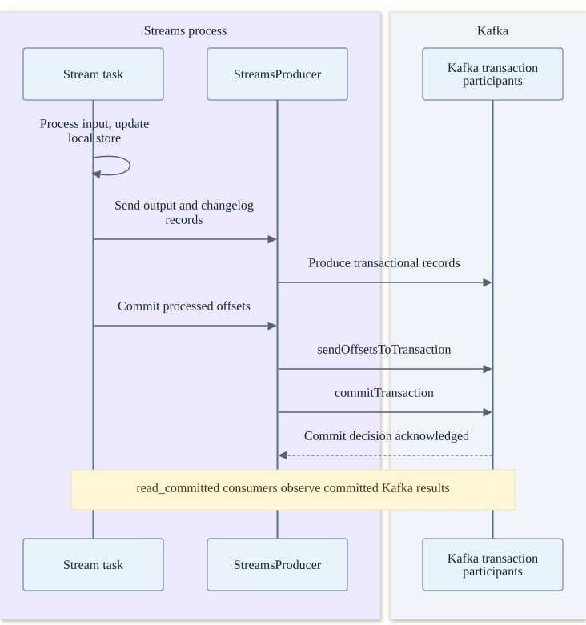

Chapter 03 · source-backed walkthrough
Kafka Streams: tasks, state and recovery
Kafka Streams is a library inside application processes. It uses Kafka group assignment, partitioned tasks, local stores and changelog topics. It can atomically commit output, changelog writes and input offsets through Kafka transactions when the corresponding EOS mode is enabled.
01
From application instances to task ownership
Instances with the same application identity cooperate through Kafka. A stream thread owns consumer / task processing machinery. Input partition groups map to stream tasks. Task migration changes which instance owns a task; it does not require routing all records through a central Streams server.
Processor nodes, local state stores and record collectors live with each active task. Repartition topics move records to the correct key partition across instances. Changelog topics allow state reconstruction. Standby tasks consume changelogs to keep a warm copy, exchanging storage and network cost for faster failover.
Two instances and Kafka-backed state
State is local to the owning task, while restoration is backed by Kafka. A repartition edge is a real Kafka write and read.

02
Exactly-once transaction and local store consistency
The durable correctness boundary includes transactional changelog writes, output records and input offsets. The local store is not itself a distributed transaction participant that survives every host loss. Its mutations must remain compatible with the committed changelog and restoration logic; dirty local state cannot simply be trusted after any failure.
StreamsProducer.commitTransaction adds consumed offsets with current group metadata, then commits the producer transaction. Fencing and invalid producer epochs become task migration / failure signals. In at-least-once mode, committing consumer progress separately admits a duplicate-output window.
Successful task commit
The changelog and output share the Kafka transaction. The local store remains an execution cache / state representation whose recovery follows the committed history.

03
Failure, restore and performance
When an instance dies, membership changes trigger reassignment. The new owner restores state before active processing. A valid local state directory or warm standby can reduce restore bytes; neither removes the need to verify committed progress and ownership. A cold restore reads the state changelog.
Large state stores increase restore time. Standbys raise steady-state I/O and disk use. Frequent commits reduce the uncommitted visibility window but add transaction overhead. Cache coalescing can reduce changelog traffic but increases the time before an update is flushed. Repartitioning increases network traffic and Kafka storage while enabling key-correct parallelism.
A processor that calls an external HTTP endpoint is outside the Kafka transaction. If it charges a card before the task commits, replay can charge again. Use a durable idempotency key or an outbox-style Kafka output consumed by a sink that enforces uniqueness.
Task takeover after instance loss
Standby promotion or changelog replay reconstructs state; fencing protects against the old instance continuing to commit.

Inside the implementation
These excerpts come directly from the code paths used above. Expand a component to move from the system view into its implementation.
streams-state ProcessorStateManager.java:74
Task state stores, changelog registration and restored offsets.
Kafka/streams/src/main/java/org/apache/kafka/streams/processor/internals/ProcessorStateManager.java · d2da6a18f839
73 */
74 public class ProcessorStateManager implements StateManager {
75
76 public static class StateStoreMetadata {
77 private final StateStore stateStore;
78
79 // corresponding changelog partition of the store, this and the following two fields
80 // will only be not-null if the state store is logged (i.e. changelog partition and restorer provided)
81 private final TopicPartition changelogPartition;
82
83 // could be used for both active restoration and standby
84 private final StateRestoreCallback restoreCallback;
85
86 private final CommitCallback commitCallback;
87 Test source inspected or located, not executed: ProcessorStateManagerTest.java
streams-restore StoreChangelogReader.java:71
Restoration and standby changelog consumption.
Kafka/streams/src/main/java/org/apache/kafka/streams/processor/internals/StoreChangelogReader.java · d2da6a18f839
70 */
71 public class StoreChangelogReader implements ChangelogReader {
72 private static final long RESTORE_LOG_INTERVAL_MS = 10_000L;
73 private long lastRestoreLogTime = 0L;
74
75 enum ChangelogState {
76 // registered but need to be initialized (i.e. set its starting, end, limit offsets)
77 REGISTERED("REGISTERED"),
78
79 // initialized and restoring
80 RESTORING("RESTORING", 0),
81
82 // completed restoring (only for active restoring task, standby task should never be completed)
83 COMPLETED("COMPLETED", 1);
84 Test source inspected or located, not executed: StoreChangelogReaderTest.java
streams-commit StreamsProducer.java:242
Consumed offsets are added to the output producer transaction before commit.
Kafka/streams/src/main/java/org/apache/kafka/streams/processor/internals/StreamsProducer.java · d2da6a18f839
241 */
242 public void commitTransaction(final Map<TopicPartition, OffsetAndMetadata> offsets,
243 final ConsumerGroupMetadata consumerGroupMetadata) {
244 if (!eosEnabled()) {
245 throw new IllegalStateException(formatException("Exactly-once is not enabled"));
246 }
247 maybeBeginTransaction();
248 try {
249 producer.sendOffsetsToTransaction(offsets, consumerGroupMetadata);
250 } catch (final ProducerFencedException | InvalidProducerEpochException | CommitFailedException | InvalidPidMappingException error) {
251 throw new TaskMigratedException(
252 formatException("Producer got fenced trying to add offsets to a transaction"),
253 error
254 );
255 } catch (final TimeoutException timeoutException) {Test source inspected or located, not executed: StreamsProducerTest.java